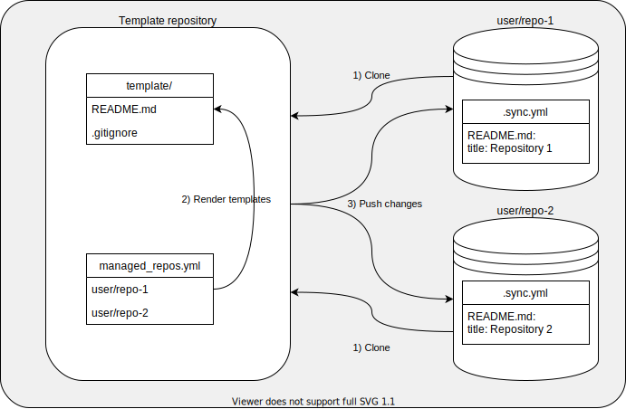

greposync - ModuleSync reimplementation in Go
Introduction
greposync is very similar to ModuleSync:
-
It clones several Git repositories to a local workspace.
-
It parses a template directory and saves each rendered template in the Git repositories
-
It commits and pushes the changes back to each Git repository.

Documentation
The documentation is inspired by the Divio’s documentation structure:
- Tutorials
-
Learning-oriented: Simple lessons to learn about this project.
- How-to guides
-
Problem-oriented: step-by-step guides to achieve a goal.
- Technical reference
-
Information-oriented: explaining the inner ongoings.
- Explanation
-
Understanding-oriented: puts this project in context.